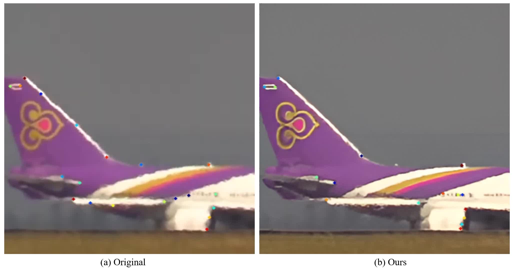
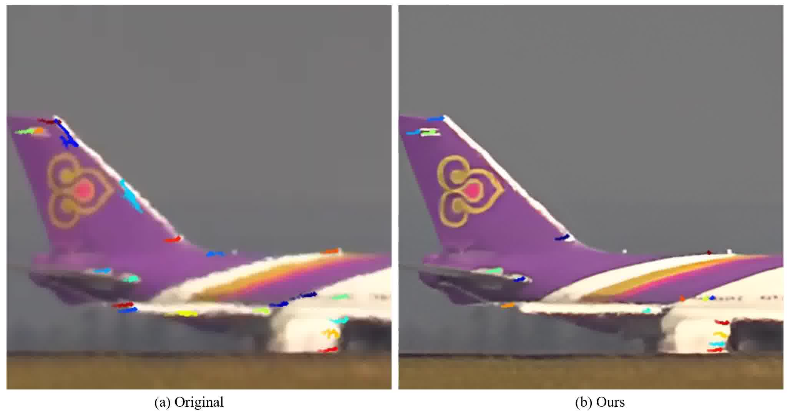
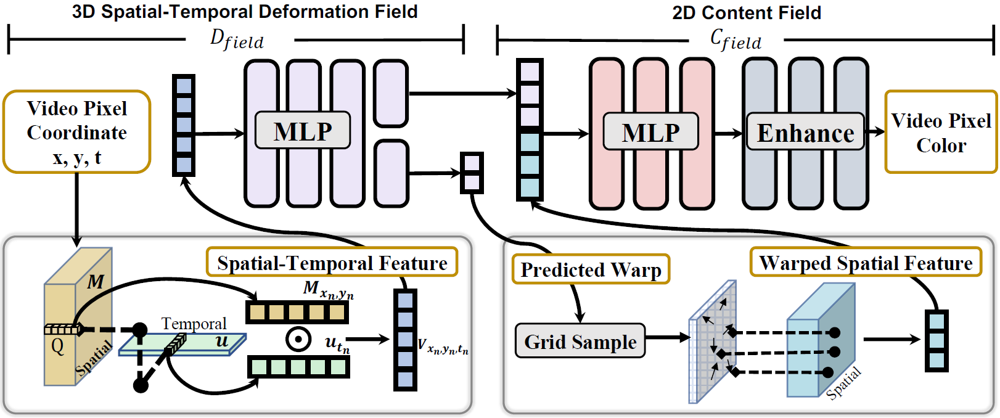

Per-Frame Restoration Quality
ConVRT offers sharper and more accurate per-frame turbulence removal than state-of-the-art methods: TurbNet and TSR-WGAN.
On synthetic videos:
On real-world videos:
Our latent image representation allows us to smoothly interpolate between frames. Use the slider to linearly interpolate between the left frame and the right frame below.

Start Frame

End Frame
Atmospheric turbulence presents a significant challenge in long-range imaging. Current restoration algorithms often struggle with temporal inconsistency, as well as limited generalization ability across varying turbulence levels and scene content different than the training data.
To tackle these issues, we introduce a self-supervised method, Consistent Video Restoration through Turbulence (ConVRT) a test-time optimization method featuring a neural video representation designed to enhance temporal consistency in restoration.
A key innovation of ConVRT is the integration of a pretrained vision-language model (CLIP) for semantic-oriented supervision, which steers the restoration towards sharp, photorealistic images in the CLIP latent space. We further develop a principled selection strategy of text prompts, based on their statistical correlation with a perceptual metric.
ConVRT's test-time optimization allows it to adapt to a wide range of real-world turbulence conditions, effectively leveraging the insights gained from pre-trained models on simulated data. ConVRT offers a comprehensive and effective solution for mitigating real-world turbulence in dynamic videos.

On real-world videos: